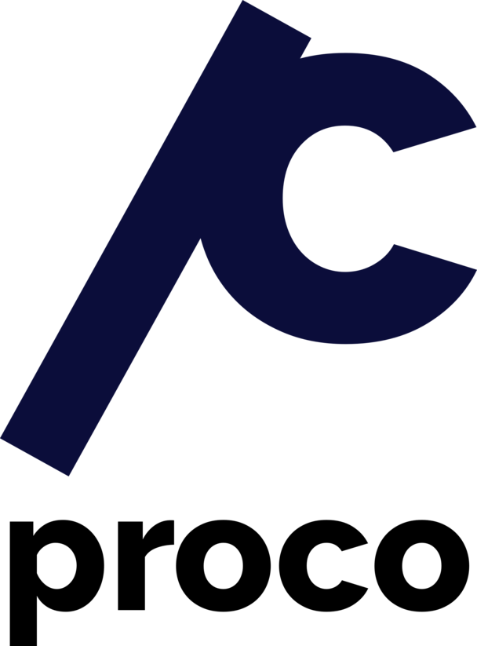

ProCo is a computer programming contest for high school students in the style of the college-level ACM-ICPC. ProCo aims to provide a fun and engaging opportunity for high school students in the Bay Area to explore their passion in computer science.
Interested? Sign up on our mailing list to keep up to date on ProCo news.
ProCo is hosted by Stanford ACM.
Teams compete in groups of up to three students. The contest consists of a speed round and a special round.
The speed round will be 2 hours and will consist of 8-10 unweighted problems.
The special round will also be 2 hours. More rules and scoring details are dependent on the year.
The contest is also split between two separate divisions: Novice and Advanced.
For full rules and more detailed information, see our ProCo info page.
Q: How much programming experience do I need to compete?
A: Most competitors will have had at least one year of programming experience. You will need to know how to manipulate integers, strings and arrays. It is not necessary to know advanced data structures (lists, sets, maps, stacks, queues, trees), though you may find this knowledge helpful. If we introduce a concept that you are not expected to know, we will explain it thoroughly in the problem description.
Q: What division should I be in?
A: The Novice division is designed for first-timers and competitors with less than two years of programming experience. The Advanced division is designed for returning competitors and competitors with at least two years of programming experience, or who have previously competed in ProCo.
Q: Is there an advantage to coding in a particular language?
A: No. Each language has pros and cons, and you should choose the language you are most comfortable with. In general, we have written the problems carefully so that language-specific features will not give anyone an unfair advantage.
Q: How will input and output work with my IDE?
A: This depends on the language and software package you're using.
Q: Will all the input be in one terminal entry, or will each line be separate?
A: Each problem has its own input format. For some problems, the input will be a single integer, for other problems, the input will consist of multiple lines. We have designed the problems such that parsing the input will be as simple as possible.
Q: Will my travel expenses be reimbursed?
A: Unfortunately, we will not be able to reimburse your travel expenses. You are responsible for your own method and cost of transportation. If you cannot easily find a means to come to campus, we highly recommend taking the online version of the competition.
Q: What if I forget to bring the ProCo Participant Waiver Form during the day of the contest?
A: Unfortunately, due to liability issues, you will not be able to participate in the contest. Don't forget!